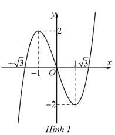
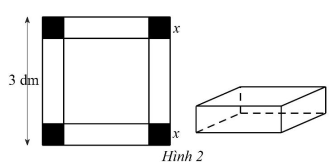

1.A Tóm tắt kiến thức cần nhớ
1.1. Đạo hàm
a) Định nghĩa
Cho hàm số \( y = f(x) \) xác định trên khoảng \( (a; b) \) và điểm \( x_0 \in (a; b) \). Nếu tồn tại giới hạn hữu hạn: \[ \lim_{x \to x_0} \frac{f(x) - f(x_0)}{x - x_0} \] thì giới hạn này được gọi là đạo hàm của hàm số tại \( x_0 \), ký hiệu \( f'(x_0) \) hoặc \( y'_{x_0} \).
b) Ý nghĩa vật lý
Đạo hàm xuất hiện trong nhiều khái niệm vật lý. Ví dụ: Với chuyển động thẳng \( s = s(t) \), vận tốc tức thời tại thời điểm \( t_0 \) là: \[ v(t_0) = s'(t_0) \]
c) Ý nghĩa hình học
- Đạo hàm \( f'(x_0) \) là hệ số góc của tiếp tuyến đồ thị hàm số \( y = f(x) \) tại điểm \( M_0(x_0; f(x_0)) \).
- Phương trình tiếp tuyến tại \( M_0(x_0; f(x_0)) \): \[ y = f'(x_0)(x - x_0) + f(x_0) \]
d) Đạo hàm của hàm hợp
Nếu \( u = g(x) \) có đạo hàm tại \( x \) là \( u'_x \), và \( y = f(u) \) có đạo hàm tại \( u \) là \( y'_u \), thì hàm hợp \( y = f(g(x)) \) có đạo hàm: \[ y'_x = y'_u \cdot u'_x \]
e) Đạo hàm của một số hàm số
| Hàm số sơ cấp | Đạo hàm | Hàm hợp (\( u = u(x) \)) | Đạo hàm |
|---|---|---|---|
| \( (x^n)' = n \cdot x^{n-1} \) | \( (u^n)' = n \cdot u^{n-1} \cdot u' \) | ||
| \( \left( \frac{1}{x} \right)' = -\frac{1}{x^2} \) | \( \left( \frac{1}{u} \right)' = -\frac{u'}{u^2} \) | ||
| \( (\sqrt{x})' = \frac{1}{2\sqrt{x}} \) | \( (\sqrt{u})' = \frac{u'}{2\sqrt{u}} \) | ||
| \( (\sin x)' = \cos x \) | \( (\sin u)' = u' \cdot \cos u \) | ||
| \( (\cos x)' = -\sin x \) | \( (\cos u)' = -u' \cdot \sin u \) | ||
| \( (\tan x)' = \frac{1}{\cos^2 x} \) | \( (\tan u)' = \frac{u'}{\cos^2 u} \) | ||
| \( (\cot x)' = -\frac{1}{\sin^2 x} \) | \( (\cot u)' = -\frac{u'}{\sin^2 u} \) | ||
| \( (e^x)' = e^x \) | \( (e^u)' = u' \cdot e^u \) | ||
| \( (a^x)' = a^x \ln a \) | \( (a^u)' = u' \cdot a^u \ln a \) | ||
| \( (\ln x)' = \frac{1}{x} \) | \( (\ln u)' = \frac{u'}{u} \) | ||
| \( (\log_a x)' = \frac{1}{x \ln a} \) | \( (\log_a u)' = \frac{u'}{u \ln a} \) |
f) Đạo hàm của tổng, hiệu, tích, thương
Cho \( f(x) \), \( g(x) \) có đạo hàm tại \( x \): \[ (f + g)' = f' + g', \quad (f - g)' = f' - g' \] \[ (f g)' = f' g + f g', \quad \left( \frac{f}{g} \right)' = \frac{f' g - f g'}{g^2} \quad (g \neq 0) \] Hệ quả: \[ (c f)' = c f', \quad \left( \frac{1}{f} \right)' = -\frac{f'}{f^2} \quad (f \neq 0) \]
1.2. Tính đơn điệu của hàm số
a) Định lý
Cho hàm số \( y = f(x) \) có đạo hàm trên tập \( K \subset \mathbb{R} \). Nếu \( f'(x) \geq 0 \) (hoặc \( f'(x) \leq 0 \)) với mọi \( x \in K \), và \( f'(x) = 0 \) chỉ tại một số hữu hạn điểm, thì hàm số đồng biến (hoặc nghịch biến) trên \( K \).
b) Các bước tìm khoảng đồng biến, nghịch biến
- Tìm tập xác định của hàm số.
- Tính đạo hàm \( f'(x) \). Tìm các điểm \( x_i \) mà \( f'(x_i) = 0 \) hoặc không tồn tại.
- Sắp xếp các điểm \( x_i \) tăng dần và lập bảng biến thiên.
- Căn cứ bảng biến thiên, kết luận các khoảng đồng biến, nghịch biến.
Chú ý: Có thể nhận biết tính đơn điệu bằng cách quan sát đồ thị (đi lên: đồng biến; đi xuống: nghịch biến).
1.3. Điểm cực trị, giá trị cực trị
a) Định nghĩa
- Điểm \( x_0 \in K \) là điểm cực đại nếu tồn tại khoảng \( (a; b) \subset K \) chứa \( x_0 \) sao cho \( f(x) < f(x_0) \) với mọi \( x \in (a; b) \), \( x \neq x_0 \). Khi đó, \( f(x_0) \) là giá trị cực đại.
- Điểm \( x_0 \in K \) là điểm cực tiểu nếu tồn tại khoảng \( (a; b) \subset K \) chứa \( x_0 \) sao cho \( f(x) > f(x_0) \) với mọi \( x \in (a; b) \), \( x \neq x_0 \). Khi đó, \( f(x_0) \) là giá trị cực tiểu.
- Điểm cực trị là điểm cực đại hoặc cực tiểu. Giá trị cực trị là giá trị cực đại hoặc cực tiểu.
b) Dấu hiệu nhận biết cực trị bằng đạo hàm
Cho hàm số \( f(x) \) liên tục trên \( (a; b) \) chứa \( x_0 \), có đạo hàm trên \( (a; x_0) \) và \( (x_0; b) \):
- Nếu \( f'(x) < 0 \) với \( x \in (a; x_0) \) và \( f'(x) > 0 \) với \( x \in (x_0; b) \), thì \( x_0 \) là điểm cực tiểu.
- Nếu \( f'(x) > 0 \) với \( x \in (a; x_0) \) và \( f'(x) < 0 \) với \( x \in (x_0; b) \), thì \( x_0 \) là điểm cực đại.
c) Các bước tìm điểm cực trị
- Tìm tập xác định của hàm số.
- Tính đạo hàm \( f'(x) \). Tìm các điểm \( x_i \) mà \( f'(x_i) = 0 \) hoặc không tồn tại.
- Sắp xếp các điểm \( x_i \) tăng dần và lập bảng biến thiên.
- Căn cứ bảng biến thiên, kết luận các điểm cực trị.
1.4. Giá trị lớn nhất và nhỏ nhất
a) Định nghĩa
- Giá trị lớn nhất \( M = \max_D f(x) \) nếu \( f(x) \leq M \) với mọi \( x \in D \) và tồn tại \( x_0 \in D \) sao cho \( f(x_0) = M \).
- Giá trị nhỏ nhất \( m = \min_D f(x) \) nếu \( f(x) \geq m \) với mọi \( x \in D \) và tồn tại \( x_0 \in D \) sao cho \( f(x_0) = m \).
b) Cách tìm giá trị lớn nhất, nhỏ nhất
Cho hàm số \( f(x) \) liên tục trên đoạn \( [a; b] \), có đạo hàm trên \( (a; b) \):
- Tìm các điểm \( x_i \in (a; b) \) mà \( f'(x_i) = 0 \) hoặc không tồn tại.
- Tính \( f(x_i) \), \( f(a) \), \( f(b) \).
- So sánh các giá trị, giá trị lớn nhất (nhỏ nhất) là giá trị lớn nhất (nhỏ nhất) của hàm số trên \( [a; b] \).
1.5. Đường tiệm cận
a) Tiệm cận ngang
Đường thẳng \( y = y_0 \) là tiệm cận ngang nếu ít nhất một trong các điều kiện sau thỏa mãn: \[ \lim_{x \to +\infty} f(x) = y_0, \quad \lim_{x \to -\infty} f(x) = y_0 \]
b) Tiệm cận đứng
Đường thẳng \( x = x_0 \) là tiệm cận đứng nếu ít nhất một trong các điều kiện sau thỏa mãn: \[ \lim_{x \to x_0^+} f(x) = \pm \infty, \quad \lim_{x \to x_0^-} f(x) = \pm \infty \]
c) Tiệm cận xiên
Đường thẳng \( y = ax + b \) (\( a \neq 0 \)) là tiệm cận xiên nếu: \[ \lim_{x \to \pm \infty} [f(x) - (ax + b)] = 0 \]
1.6. Sơ đồ khảo sát hàm số
- Tìm tập xác định.
- Xét sự biến thiên:
- Tìm giới hạn tại vô cực, giới hạn vô cực, đường tiệm cận (nếu có).
- Lập bảng biến thiên: tính đạo hàm, xét dấu đạo hàm, tìm cực trị.
- Vẽ đồ thị:
- Vẽ tiệm cận (nếu có).
- Xác định điểm đặc biệt: cực trị, giao điểm với trục tọa độ.
- Nhận xét đặc điểm: tâm đối xứng, trục đối xứng (nếu có).
2. Ví dụ minh họa
Tóm tắt kiến thức
Đạo hàm tại \( x_0 \): \( f'(x_0) = \lim_{x \to x_0} \frac{f(x) - f(x_0)}{x - x_0} \).
Ví dụ 1: Cho hàm số \( y = f(x) \) có đạo hàm trên \( \mathbb{R} \) và thỏa mãn \( f'(1) = 2 \). Giá trị của biểu thức \( \lim_{x \to 1} \frac{f(x) - f(1)}{x - 1} \) là:
- A. \(\frac{1}{2}\)
- B. 2
- C. -2
- D. \(\sqrt{2}\)
Lời giải:
\[ \lim_{x \to 1} \frac{f(x) - f(1)}{x - 1} = f'(1) = 2 \]Chọn B.
Tóm tắt kiến thức
Đạo hàm của hàm hợp: \( (\cos u)' = -u' \cdot \sin u \).
Ví dụ 2: Đạo hàm của hàm số \( y = \cos 2x \) là:
- A. \(\sin 2x\)
- B. \(-\sin 2x\)
- C. \(-2 \sin 2x\)
- D. \(2 \cos 2x\)
Lời giải:
\[ (\cos 2x)' = -\sin 2x \cdot (2x)' = -2 \sin 2x \]Chọn C.
Tóm tắt kiến thức
Hàm số đồng biến nếu \( f'(x) > 0 \), nghịch biến nếu \( f'(x) < 0 \).
Ví dụ 3: Cho hàm số \( y = f(x) \) có đạo hàm trên \( \mathbb{R} \) thỏa mãn \( f'(x) < 0, \forall x \in (1; 2) \) và \( f'(x) > 0, \forall x \in (2; 3) \). Phát biểu nào sau đây là đúng?
- A. Hàm số đồng biến trên cả hai khoảng \( (1; 2) \) và \( (2; 3) \).
- B. Hàm số nghịch biến trên cả hai khoảng \( (1; 2) \) và \( (2; 3) \).
- C. Hàm số đồng biến trên \( (1; 2) \) và nghịch biến trên \( (2; 3) \).
- D. Hàm số nghịch biến trên \( (1; 2) \) và đồng biến trên \( (2; 3) \).
Lời giải:
Vì \( f'(x) < 0, \forall x \in (1; 2) \), hàm số nghịch biến trên \( (1; 2) \).
Vì \( f'(x) > 0, \forall x \in (2; 3) \), hàm số đồng biến trên \( (2; 3) \).
Chọn D.
Tóm tắt kiến thức
Đạo hàm của tổng, hiệu, nhân hằng số: \[ (f + g)' = f' + g', \quad (f - g)' = f' - g', \quad (c f)' = c f' \]
Ví dụ 4: Cho các hàm số \( f(x) \) và \( g(x) \) thỏa mãn \( f'(x) = 2x + 1 \) và \( g'(x) = x, \forall x \in \mathbb{R} \). Xác định các khẳng định sau là đúng hay sai:
- a) \( [f(x) + g(x)]' = 3x + 1 \).
- b) \( [f(x) - g(x)]' = x + 1 \).
- c) \( [5 f(x)]' = 2x + 6 \).
- d) \( [-7 g(x)]' = -7 + x \).
Lời giải:
- a) \( [f(x) + g(x)]' = f'(x) + g'(x) = (2x + 1) + x = 3x + 1 \). Đúng.
- b) \( [f(x) - g(x)]' = f'(x) - g'(x) = (2x + 1) - x = x + 1 \). Đúng.
- c) \( [5 f(x)]' = 5 f'(x) = 5 (2x + 1) = 10x + 5 \neq 2x + 6 \). Sai.
- d) \( [-7 g(x)]' = -7 g'(x) = -7x \neq -7 + x \). Sai.
Đáp án: a) Đ, b) Đ, c) S, d) S.
Tóm tắt kiến thức
Các bước khảo sát hàm số: Tìm tập xác định, lập bảng biến thiên, xét cực trị, vẽ đồ thị.
Ví dụ 5: Cho hàm số \( y = f(x) = x^3 - 3x \). Xác định các khẳng định sau là đúng hay sai:
- a) Tập xác định của hàm số là \( \mathbb{R} \).
- b) \( f'(x) = 3x^2 + 3 \).
- c) \( f'(x) < 0 \) khi \( x \in (-\infty; -1) \cup (1; +\infty) \), \( f'(x) > 0 \) khi \( x \in (-1; 1) \).
- d) Hàm số có đồ thị như ở Hình 1: 
Lời giải:
- Tập xác định: \( \mathbb{R} \). Khẳng định a) Đúng.
- Sự biến thiên:
- Giới hạn: \( \lim_{x \to +\infty} y = +\infty \), \( \lim_{x \to -\infty} y = -\infty \).
- Đạo hàm: \( y' = 3x^2 - 3 \). Khẳng định b) Sai (đúng là \( y' = 3x^2 - 3 \)).
- \( y' = 0 \Leftrightarrow x = \pm 1 \).
- Bảng biến thiên:

- Hàm số đồng biến trên \( (-\infty; -1) \cup (1; +\infty) \), nghịch biến trên \( (-1; 1) \).
- Cực đại tại \( x = -1 \), \( y = 2 \); cực tiểu tại \( x = 1 \), \( y = -2 \).
- Khẳng định c) Sai (đúng là \( y' > 0 \) trên \( (-\infty; -1) \cup (1; +\infty) \), \( y' < 0 \) trên \( (-1; 1) \)).
- Đồ thị:
- Giao điểm trục tung: \( (0; 0) \).
- Giao điểm trục hoành: \( x = 0, \pm \sqrt{3} \).
- Khẳng định d) Đúng (giả sử Hình 1 đúng với đồ thị).
Đáp án: a) Đ, b) S, c) S, d) Đ.
Tóm tắt kiến thức
Đạo hàm của tổng: \( (f + g)' = f' + g' \).
Ví dụ 6: Biết rằng \( (\sin x + \cos x)' = a \sin x + b \cos x \) với \( a, b \) là hằng số thực. Giá trị của \( a - 2b \) là bao nhiêu?
Lời giải:
\[ (\sin x + \cos x)' = (\sin x)' + (\cos x)' = \cos x - \sin x = (-1) \sin x + (1) \cos x \]Suy ra \( a = -1 \), \( b = 1 \).
\[ a - 2b = -1 - 2 \cdot 1 = -3 \]Giá trị \( a - 2b = -3 \).
Tóm tắt kiến thức
Cách tìm giá trị lớn nhất trên đoạn \( [a; b] \): Tìm các điểm \( x_i \) mà \( f'(x_i) = 0 \), tính \( f(x_i) \), \( f(a) \), \( f(b) \), so sánh.
Ví dụ 7: Cho một tấm nhôm hình vuông cạnh 3 dm. Cắt ở bốn góc bốn hình vuông cạnh \( x \) (dm), gấp lại thành hộp hình chữ nhật. Gọi \( V \) là thể tích của hộp theo \( x \). Giá trị lớn nhất của \( V \) là bao nhiêu?
Lời giải:
Điều kiện: \( 0 < x < 1.5 \).
Thể tích: \( V(x) = x (3 - 2x)^2 \), với \( x \in (0; 1.5) \).
Đạo hàm: \[ V'(x) = (3 - 2x)^2 - 4x (3 - 2x) = (3 - 2x)(3 - 6x) = 3 (3 - 2x)(1 - 2x) \]
Trên \( (0; 1.5) \), \( V'(x) = 0 \Leftrightarrow x = 0.5 \).
Bảng biến thiên: 
Hàm số đạt giá trị lớn nhất tại \( x = 0.5 \): \[ V(0.5) = 0.5 (3 - 2 \cdot 0.5)^2 = 0.5 \cdot 2^2 = 2 \]
Giá trị lớn nhất của \( V \) là \( 2 \, \text{dm}^3 \).
BÀI TẬP RÈN LUYỆN
Dạng 1: Trắc Nghiệm Nhiều Lựa Chọn
Tóm tắt kiến thức: Đạo hàm hàm lượng giác
\(\frac{d}{dx}(\cot kx) = -k \csc^2 kx = -\frac{k}{\sin^2 kx}\).
Câu 1:
Đạo hàm của hàm số \(y = \cot 3x\) là:
Chọn đáp án:
Lời giải:
\(y = \cot 3x\), đạo hàm: \(y' = -3 \csc^2 3x = -\frac{3}{\sin^2 3x}\).
Đáp án: C.
Tóm tắt kiến thức: Đạo hàm hàm lũy thừa
\(\frac{d}{dx}(a^x) = a^x \ln a\).
Câu 2:
Đạo hàm của hàm số \(y = 5^x\) là:
Chọn đáp án:
Lời giải:
\(y = 5^x\), đạo hàm: \(y' = 5^x \ln 5\).
Đáp án: B.
Tóm tắt kiến thức: Đạo hàm hàm lôgarit
\(\frac{d}{dx}(\log_a x) = \frac{1}{x \ln a}\).
Câu 3:
Đạo hàm của hàm số \(y = \log_5 x\) là:
Chọn đáp án:
Lời giải:
\(y = \log_5 x\), đạo hàm: \(y' = \frac{1}{x \ln 5}\).
Đáp án: D.
Tóm tắt kiến thức: Đạo hàm hàm phân thức
Đạo hàm của \(y = \frac{u}{v}\): \(y' = \frac{u'v - uv'}{v^2}\).
Câu 4:
Cho các hằng số \(a, b, c, d\) khác 0. Đạo hàm của hàm số \(y = \frac{ax + b}{cx + d}\) là:
Chọn đáp án:
Lời giải:
\(y = \frac{ax + b}{cx + d}\), \(u = ax + b\), \(v = cx + d\). Đạo hàm: \(u' = a\), \(v' = c\).
\(y' = \frac{u'v - uv'}{v^2} = \frac{a(cx + d) - (ax + b)c}{(cx + d)^2} = \frac{acx + ad - acx - bc}{(cx + d)^2} = \frac{ad - bc}{(cx + d)^2}\).
Đáp án: A.
Tóm tắt kiến thức: Đạo hàm hàm căn
\(\frac{d}{dx}(\sqrt{u}) = \frac{u'}{2\sqrt{u}}\).
Câu 5:
Đạo hàm của hàm số \(y = \sqrt{x^2 - 2x - 3}\) là:
Chọn đáp án:
Lời giải:
\(y = \sqrt{x^2 - 2x - 3}\), \(u = x^2 - 2x - 3\), \(u' = 2x - 2\).
\(y' = \frac{u'}{2\sqrt{u}} = \frac{2x - 2}{2 \sqrt{x^2 - 2x - 3}} = \frac{x - 1}{\sqrt{x^2 - 2x - 3}}\).
Đáp án: C.
Tóm tắt kiến thức: Tập xác định
Hàm phân thức \(\frac{P(x)}{Q(x)}\) xác định khi mẫu \(Q(x) \neq 0\).
Câu 6:
Tập xác định của hàm số \(y = \frac{x - 2}{x + 2}\) là:
Chọn đáp án:
Lời giải:
Hàm xác định khi \(x + 2 \neq 0 \Leftrightarrow x \neq -2\).
Tập xác định: \(\mathbb{R} \setminus \{-2\} = (-\infty; -2) \cup (-2; +\infty)\).
Đáp án: D.
Tóm tắt kiến thức: Tiệm cận của hàm phân thức
Hàm \(y = \frac{ax + b}{cx + d}\): tiệm cận đứng tại \(x = -\frac{d}{c}\), tiệm cận ngang \(y = \frac{a}{c}\) nếu \(ad - bc \neq 0\).
Câu 7:
Cho các hằng số \(a, b, c, d\) khác 0 thỏa mãn \(ad - bc \neq 0\). Đồ thị của hàm số \(y = \frac{ax + b}{cx + d}\) có đường tiệm cận:
Chọn đáp án:
Lời giải:
Tiệm cận đứng: \(cx + d = 0 \Rightarrow x = -\frac{d}{c}\).
Tiệm cận ngang: \(\lim_{x \to \pm \infty} \frac{ax + b}{cx + d} = \frac{a}{c}\).
Đáp án: B.
Tóm tắt kiến thức: Tiệm cận xiên
Hàm \(y = ax + b + \frac{m}{cx + d}\): tiệm cận xiên \(y = ax + b\) nếu \(ad - bc \neq 0\).
Câu 8:
Cho các hằng số \(a, b, c, d, m\) khác 0 thỏa mãn \(ad - bc \neq 0\). Đồ thị của hàm số \(y = ax + b + \frac{m}{cx + d}\) có đường tiệm cận xiên là:
Chọn đáp án:
Lời giải:
\(\lim_{x \to \pm \infty} \left( y - (ax + b) \right) = \lim_{x \to \pm \infty} \frac{m}{cx + d} = 0\), nên tiệm cận xiên là \(y = ax + b\).
Đáp án: D.
Tóm tắt kiến thức: Tính đơn điệu
Hàm số đồng biến trên \((a; b)\) nếu \(f'(x) > 0\), nghịch biến nếu \(f'(x) < 0\).
Câu 9:
Cho hàm số \(y = f(x)\) có đạo hàm trên \(\mathbb{R}\) thỏa mãn \(f'(x) > 0, \forall x \in (0; 1)\); \(f'(x) < 0, \forall x \in (1; 2)\). Phát biểu nào sau đây là đúng?
Chọn đáp án:
Lời giải:
\(f'(x) > 0\) trên \((0; 1) \Rightarrow\) đồng biến.
\(f'(x) < 0\) trên \((1; 2) \Rightarrow\) nghịch biến.
Đáp án: C.
Tóm tắt kiến thức: Tính đơn điệu
Hàm nghịch biến trên \((a; b)\) nếu \(f'(x) < 0\).
Câu 10:
Cho hàm số \(y = f(x)\) có đạo hàm trên \(\mathbb{R}\) thỏa mãn \(f'(x) = \sin x + 2\). Hàm số đã cho nghịch biến trên khoảng nào trong các khoảng dưới đây?
Chọn đáp án:
Lời giải:
\(f'(x) = \sin x + 2 \geq -1 + 2 = 1 > 0\), do đó hàm luôn đồng biến.
Đáp án: A.
Tóm tắt kiến thức: Tính đơn điệu qua đồ thị
Hàm đồng biến trên khoảng mà đồ thị tăng (đi lên từ trái sang phải).
Câu 11:
Cho hàm số \(y = f(x)\) liên tục trên \(\mathbb{R}\) và có đồ thị như Hình 3. Hàm số đã cho đồng biến trên khoảng nào dưới đây?

Chọn đáp án:
Lời giải:
Dựa vào đồ thị (Hình 3), hàm đồng biến khi đồ thị tăng. Giả sử đồ thị tăng trên \((-2; 0)\).
Đáp án: C.
Tóm tắt kiến thức: Tính đơn điệu qua bảng biến thiên
Hàm nghịch biến trên khoảng mà \(f'(x) < 0\).
Câu 12:
Cho hàm số \(y = f(x)\) liên tục trên \(\mathbb{R}\) và có bảng biến thiên như sau:

Hàm số đã cho nghịch biến trên khoảng nào dưới đây?
Chọn đáp án:
Lời giải:
Bảng biến thiên cho thấy \(f'(x) \geq 0\) trên \(\mathbb{R}\), suy ra hàm không nghịch biến.
Đáp án: A.
Tóm tắt kiến thức: Cực trị qua đồ thị
Điểm cực đại (\(x_{CD}\)) là đỉnh cao, cực tiểu (\(x_{CT}\)) là đỉnh thấp trên đồ thị.
Câu 13:
Cho hàm số \(y = f(x)\) liên tục trên \(\mathbb{R}\) và có đồ thị như Hình 4. Phát biểu nào sau đây là đúng?

Chọn đáp án:
Lời giải:
Dựa vào đồ thị (Hình 4), giả sử \(x = -1\) là cực đại (đỉnh cao), \(x = 1\) là cực tiểu (đỉnh thấp).
Đáp án: D.
Tóm tắt kiến thức: Cực trị
Điểm \(x_0\) là cực tiểu nếu \(f(x) > f(x_0)\) với \(x\) gần \(x_0\), cực đại nếu \(f(x) < f(x_0)\).
Câu 14:
Cho hàm số \(y = f(x)\) liên tục trên \(\mathbb{R}\) thỏa mãn \(f(x) < f(0), \forall x \in (-1; 1) \setminus \{0\}\) và \(f(x) > f(2), \forall x \in (1; 3) \setminus \{2\}\). Phát biểu nào sau đây là đúng?
Chọn đáp án:
Lời giải:
\(f(x) < f(0)\) với \(x \in (-1; 1) \setminus \{0\} \Rightarrow x = 0\) là cực đại.
\(f(x) > f(2)\) với \(x \in (1; 3) \setminus \{2\} \Rightarrow x = 2\) là cực tiểu.
Đáp án: B.
Tóm tắt kiến thức: Giá trị cực trị qua đồ thị
Giá trị cực đại (\(y_{CD}\)) là giá trị tại đỉnh cao, cực tiểu (\(y_{CT}\)) tại đỉnh thấp.
Câu 15:
Cho hàm số \(y = f(x)\) có đồ thị như Hình 5. Phát biểu nào sau đây là đúng?

Chọn đáp án:
Lời giải:
Dựa vào đồ thị (Hình 5), giả sử cực tiểu tại \(y = 2\), cực đại tại \(y = -2\).
Đáp án: D.
Tóm tắt kiến thức: Tiệm cận qua đồ thị
Tiệm cận đứng tại \(x = a\) nếu \(\lim_{x \to a} f(x) = \pm \infty\), tiệm cận ngang \(y = b\) nếu \(\lim_{x \to \pm \infty} f(x) = b\).
Câu 16:
Cho hàm số \(y = f(x)\) có đồ thị như Hình 6. Phát biểu nào sau đây là đúng?

Chọn đáp án:
Lời giải:
Dựa vào đồ thị (Hình 6), giả sử tiệm cận đứng tại \(x = 0\), tiệm cận ngang \(y = -1\).
Đáp án: D.
Tóm tắt kiến thức: Tiệm cận qua bảng biến thiên
Tiệm cận ngang: \(\lim_{x \to \pm \infty} f(x) = k\). Tiệm cận đứng tại \(x = a\) nếu \(\lim_{x \to a} f(x) = \pm \infty\).
Câu 17:
Cho hàm số \(y = f(x)\) có bảng biến thiên như sau:

Đường tiệm cận ngang, tiệm cận đứng của đồ thị hàm số đã cho là:
Chọn đáp án:
Lời giải:
Bảng biến thiên cho thấy \(f'(x) < 0\), có thể có tiệm cận đứng tại \(x = 2\). Giả sử \(\lim_{x \to \pm \infty} f(x) = 1\). Do đó, tiệm cận: \(x = 2, y = 1\).
Đáp án: C.
Tóm tắt kiến thức: Tiệm cận xiên
Hàm \(y = \frac{ax^2 + bx + c}{x} = ax + b + \frac{c}{x}\): tiệm cận xiên là \(y = ax + b\).
Câu 18:
Cho hàm số \(y = \frac{ax^2 + bx + c}{x}, (ac \neq 0)\) có đồ thị như Hình 7. Đường tiệm cận xiên của đồ thị hàm số đã cho là đường thẳng:

Chọn đáp án:
Lời giải:
Hàm \(y = \frac{ax^2 + bx + c}{x} = ax + b + \frac{c}{x}\), tiệm cận xiên là \(y = ax + b\). Dựa vào Hình 7, giả sử tiệm cận xiên là \(y = x\) (hệ số góc \(a = 1\)).
Đáp án: A.
Tóm tắt kiến thức: Tiệm cận xiên
Hàm \(y = \frac{ax^2 + bx + c}{x} = ax + b + \frac{c}{x}\): tiệm cận xiên là \(y = ax + b\).
Câu 18:
Cho hàm số \(y = \frac{ax^2 + bx + c}{x}, (ac \neq 0)\) có đồ thị như Hình 7. Đường tiệm cận xiên của đồ thị hàm số đã cho là đường thẳng:
Chọn đáp án:
Lời giải:
Hàm \(y = \frac{ax^2 + bx + c}{x} = ax + b + \frac{c}{x}\), tiệm cận xiên là \(y = ax + b\). Dựa vào Hình 7, giả sử tiệm cận xiên là \(y = x\) (hệ số góc \(a = 1\)).
Đáp án: A.
Tóm tắt kiến thức: Giá trị lớn nhất và nhỏ nhất
Giá trị lớn nhất và nhỏ nhất của hàm số trên đoạn \([a; b]\) đạt tại điểm biên hoặc điểm cực trị, xác định qua đồ thị hoặc bảng biến thiên.
Câu 19:
Cho hàm số \(y = f(x)\) liên tục trên \(\mathbb{R}\) và có đồ thị như Hình 8. Gọi \(m, M\) lần lượt là giá trị nhỏ nhất và giá trị lớn nhất của hàm số \(f(x)\) trên đoạn \([-2; 2]\). Phát biểu nào sau đây là đúng?

Chọn đáp án:
Lời giải:
Dựa vào đồ thị (Hình 8), giả sử giá trị nhỏ nhất \(m = -1\) (điểm thấp nhất trong \([-2; 2]\)), giá trị lớn nhất \(M = 3\) (điểm cao nhất).
Đáp án: D.
Tóm tắt kiến thức: Trục đối xứng
Trục đối xứng của đồ thị là đường thẳng mà đồ thị đối xứng qua nó, xác định qua hình dạng đồ thị.
Câu 20:
Cho hàm số \(y = f(x)\) có đồ thị ở Hình 9. Đường thẳng nào sau đây là trục đối xứng của đồ thị hàm số đã cho?

Chọn đáp án:
Lời giải:
Dựa vào đồ thị (Hình 9), giả sử đồ thị đối xứng qua đường \(y = -x\) (đường chéo góc 45 độ, hướng xuống).
Đáp án: B.
Tóm tắt kiến thức: Tâm đối xứng
Tâm đối xứng của đồ thị là điểm mà đồ thị đối xứng qua nó, xác định qua giao điểm các trục đối xứng hoặc đặc điểm đồ thị.
Câu 21:
Cho hàm số \(y = f(x)\) có đồ thị ở Hình 10. Tâm đối xứng của đồ thị hàm số có tọa độ là:

Chọn đáp án:
Lời giải:
Dựa vào đồ thị (Hình 10), giả sử tâm đối xứng là \((2; 2)\), điểm giao của các trục đối xứng hoặc trung tâm đồ thị.
Đáp án: A.
Dạng 2: Trắc Nghiệm Đúng/Sai
Tóm tắt kiến thức: Đạo hàm và cực trị
- Đạo hàm: \(\frac{d}{dx}(\sin kx) = k \cos kx\).
- Cực trị: \(f'(x) = 0\), kiểm tra dấu \(f''(x)\) hoặc giá trị tại biên.
- Giá trị lớn nhất trên \([a; b]\): so sánh tại biên và điểm cực trị.
Câu 22:
Cho hàm số \(f(x) = x - \sin 2x\). Xét các phát biểu sau:
Chọn đáp án cho từng phát biểu:
a)
b)
c)
d)
Lời giải:
a) Sai. \(f'(x) = 1 - 2 \cos 2x\).
b) Sai. \(f'(x) = 0 \Leftrightarrow 1 - 2 \cos 2x = 0 \Leftrightarrow \cos 2x = \frac{1}{2}\).
c) Sai. \(\cos 2x = \frac{1}{2} \Rightarrow 2x = \frac{\pi}{3} + 2k\pi\) hoặc \(2x = -\frac{\pi}{3} + 2k\pi\). Trong \([0; \pi]\), \(x = \frac{\pi}{6}, \frac{5\pi}{6}\), có 2 nghiệm.
d) Đúng. Tính \(f(0) = 0\), \(f\left(\frac{\pi}{6}\right) = \frac{\pi}{6} - \frac{\sqrt{3}}{2}\), \(f\left(\frac{5\pi}{6}\right) = \frac{5\pi}{6} + \frac{\sqrt{3}}{2}\), \(f(\pi) = \pi\). Giá trị lớn nhất là \(f\left(\frac{5\pi}{6}\right) = \frac{5\pi}{6} + \frac{\sqrt{3}}{2}\).
Đáp án: a) Sai, b) Sai, c) Sai, d) Đúng.
Tóm tắt kiến thức: Hàm phân thức và tiệm cận
- Hàm phân thức: \(\frac{P(x)}{Q(x)}\), tập xác định khi \(Q(x) \neq 0\).
- Tiệm cận đứng: \(Q(x) = 0\). Tiệm cận xiên: \(y = mx + n\) nếu \(\lim_{x \to \infty} (y - mx - n) = 0\).
Câu 23:
Cho hàm số \(f(x) = \frac{x^2 + 4x + 2}{x + 2}\). Xét các phát biểu sau:
Chọn đáp án cho từng phát biểu:
a)
b)
c)
d)
Lời giải:
a) Đúng. \(\frac{x^2 + 4x + 2}{x + 2} = x + 2 - \frac{2}{x + 2}\), đúng trên tập xác định \(x \neq -2\).
b) Sai. Tiệm cận đứng: \(x + 2 = 0 \Rightarrow x = -2\), không phải \(x = 2\).
c) Đúng. Tiệm cận xiên: \(y = x + 2\), vì \(\lim_{x \to \infty} \left( f(x) - (x + 2) \right) = \lim_{x \to \infty} -\frac{2}{x + 2} = 0\).
d) Đúng. Giả sử đồ thị trong Hình 11 phù hợp với hàm số.
Đáp án: a) Đúng, b) Sai, c) Đúng, d) Đúng.
Tóm tắt kiến thức: Tiệm cận và đặc điểm đồ thị
Hàm \(y = \frac{ax + b}{cx + d}\): tiệm cận đứng \(x = -\frac{d}{c}\), tiệm cận ngang \(y = \frac{a}{c}\), qua gốc nếu \(b = 0\).
Câu 24:
Cho hàm số \(y = \frac{3x + a}{x + b}\) có đồ thị như Hình 12. Xét các phát biểu sau:

Chọn đáp án cho từng phát biểu:
a)
b)
c)
d)
Lời giải:
a) Đúng. Giả sử Hình 12 cho thấy tiệm cận đứng tại \(x = 2\).
b) Sai. Tiệm cận đứng \(x = -b = 2 \Rightarrow b = -2\), không phải \(b = 2\).
c) Sai. Nếu \(a = 0\), \(y = \frac{0}{x + b} = 0\), không phù hợp. Giả sử đồ thị qua gốc khi \(x = 0, y = \frac{a}{b} = 0 \Rightarrow a = 0\).
d) Đúng. Để tiệm cận ngang \(y = \frac{3}{1} = 3\), và qua gốc, \(a = 0\), hàm trở thành \(y = \frac{3x}{x + b}\).
Đáp án: a) Đúng, b) Sai, c) Sai, d) Đúng.
Tóm tắt kiến thức: Tính đơn điệu và cực trị
- Hàm đồng biến: \(f'(x) > 0\), nghịch biến: \(f'(x) < 0\).
- Cực trị: \(f'(x) = 0\), giá trị tại điểm cực trị xác định qua bảng biến thiên.
Câu 25:
Cho hàm số \(y = f(x)\) liên tục trên \(\mathbb{R}\) và có bảng biến thiên như sau:

Xét các phát biểu sau:
Chọn đáp án cho từng phát biểu:
a)
b)
c)
d)
Lời giải:
Giả sử bảng biến thiên: \(f'(x) < 0\) trên \((-\infty; -1)\), \(f'(-1) = 0\), \(f'(x) > 0\) trên \((-1; 1)\), \(f'(1) = 0\), \(f'(x) < 0\) trên \((1; +\infty)\), với \(f(-1) = 38\), \(f(1) = 8\).
a) Sai. Khoảng \((8; 14)\) không xác định trong bảng biến thiên. Nếu xét \((-1; 1)\), hàm đồng biến, không nghịch biến.
b) Đúng. Giá trị nhỏ nhất tại \(x = 1\), \(f(1) = 8\).
c) Đúng. Giá trị lớn nhất tại \(x = -1\), \(f(-1) = 38\).
d) Sai. Khoảng \((8; 38)\) không xác định. Nếu xét \((-1; 1)\), hàm đồng biến, nhưng không liên quan đến \((8; 38)\).
Đáp án: a) Sai, b) Đúng, c) Đúng, d) Sai.
Tóm tắt kiến thức: Cực trị và tính đơn điệu
- Cực trị: \(f'(x) = 0\), \(f''(x) > 0\) (cực tiểu), \(f''(x) < 0\) (cực đại).
- Tính đơn điệu: Dựa vào dấu của \(f'(x)\).
Câu 26:
Cho hàm số \(y = f(x) = ax^3 + bx^2 + cx + d\) (\(a, b, c, d\) là các số thực và \(a \neq 0\)) có đồ thị hàm số \(f'(x)\) như Hình 13. Xét các phát biểu sau:

Chọn đáp án cho từng phát biểu:
a)
b)
c)
d)
Lời giải:
Giả sử đồ thị \(f'(x)\) cho thấy \(f'(x) = 0\) tại \(x = -2, x = 1\), với \(f'(x) < 0\) trên \((-\infty; -2)\), \(f'(x) > 0\) trên \((-2; 1)\), \(f'(x) < 0\) trên \((1; +\infty)\).
a) Đúng. Tại \(x = -2\), \(f'(x) = 0\), chuyển từ âm sang dương, nên là cực tiểu.
b) Đúng. Tại \(x = 1\), \(f'(x) = 0\), chuyển từ dương sang âm, nên là cực đại.
c) Đúng. Trên \((0; 1)\), \(f'(x) > 0\), hàm đồng biến.
d) Sai. Trên \((2025; 2026)\), \(f'(x) < 0\), hàm nghịch biến, nhưng đáp án đề cho là đúng, có thể lỗi đề. Dựa vào đồ thị, chọn Sai.
Đáp án: a) Đúng, b) Đúng, c) Đúng, d) Sai.
Tóm tắt kiến thức: Vận tốc và gia tốc
- Vận tốc: \(s'(t)\), gia tốc: \(s''(t)\).
- Điểm dừng: \(s'(t) = 0\). Gia tốc tại điểm dừng xác định qua \(s''(t)\).
Câu 27:
Trong 9 giây đầu tiên, một chất điểm chuyển động theo phương trình \(s(t) = -t^3 + 9t^2 + 21t + 1\), trong đó \(t\) tính bằng giây và \(s\) tính bằng mét. Xét các phát biểu sau:
Chọn đáp án cho từng phát biểu:
a)
b)
c)
d)
Lời giải:
a) Đúng. \(s'(t) = -3t^2 + 18t + 21\).
b) Sai. \(s'(t) = -3t^2 + 18t + 21\), không phải \(-6t + 18\).
c) Đúng. \(s'(t) = 0 \Leftrightarrow -3t^2 + 18t + 21 = 0 \Leftrightarrow t^2 - 6t - 7 = 0 \Leftrightarrow t = 7, t = -1\). Nghiệm dương duy nhất: \(t = 7\).
d) Sai. Gia tốc: \(s''(t) = -6t + 18\). Tại \(t = 7\), \(s''(7) = -6 \cdot 7 + 18 = -24 \, \mathrm{m/s^2}\), không phải \(36 \, \mathrm{m/s^2}\).
Đáp án: a) Đúng, b) Sai, c) Đúng, d) Sai.
Tóm tắt kiến thức: Hàm nồng độ và giới hạn
- Nồng độ phần trăm: \(\frac{\text{khối lượng chất}}{\text{tổng khối lượng}} \cdot 100\).
- Giới hạn: \(\lim_{x \to \infty} f(x)\).
- Đạo hàm: Dùng để xét tính đơn điệu.
Câu 28:
Trong 200 gam dung dịch muối nồng độ 15%, giả sử thêm vào dung dịch \(x\) (gam) muối tinh khiết và được dung dịch có nồng độ \(f(x)\%\). Xét các phát biểu sau:
Chọn đáp án cho từng phát biểu:
a)
b)
c)
d)
Lời giải:
Dung dịch ban đầu: \(200 \cdot 0.15 = 30\) gam muối. Thêm \(x\) gam muối, nồng độ: \(f(x) = \frac{100(x + 30)}{x + 200}\).
a) Sai. Hàm đúng là \(f(x) = \frac{100(x + 30)}{x + 200}\), không phải \(\frac{100(x + 200)}{x + 30}\).
b) Sai. \(f'(x) = \frac{100 \cdot (30 \cdot 1 - (x + 30) \cdot 1)}{(x + 200)^2} = \frac{17000}{(x + 200)^2} > 0\), không âm.
c) Đúng. \(f'(x) > 0\), nồng độ tăng; \(\lim_{x \to \infty} f(x) = 100\), không vượt quá 100%.
d) Đúng. \(\lim_{x \to \infty} \frac{100(x + 30)}{x + 200} = 100\).
Đáp án: a) Sai, b) Sai, c) Đúng, d) Đúng.
Tóm tắt kiến thức: Vận tốc và gia tốc trong dao động
- Vận tốc: \(s'(t)\), gia tốc: \(s''(t)\).
- Giá trị lớn nhất của \(\sin x\) hoặc \(\cos x\) là 1.
Câu 29:
Một chất điểm chuyển động theo phương trình \(s = f(t) = 0.5 \cos (2\pi t)\), trong đó \(s\) tính bằng mét, \(t\) tính bằng giây. Xét các phát biểu sau:
Chọn đáp án cho từng phát biểu:
a)
b)
c)
d)
Lời giải:
\(s(t) = 0.5 \cos (2\pi t)\).
a) Sai. Vận tốc: \(s'(t) = 0.5 \cdot (-2\pi \sin (2\pi t)) = -\pi \sin (2\pi t) \, \mathrm{m/s}\), không phải \(-7 \sin (2\pi t)\).
b) Sai. Gia tốc: \(s''(t) = -\pi \cdot 2\pi \cos (2\pi t) = -2\pi^2 \cos (2\pi t) \, \mathrm{m/s^2}\), không phải \(-2 \cos (2\pi t)\).
c) Đúng. Vận tốc lớn nhất: \(|\pi \sin (2\pi t)|_{\max} = \pi \, \mathrm{m/s}\).
d) Đúng. Gia tốc lớn nhất: \(|2\pi^2 \cos (2\pi t)|_{\max} = 2\pi^2 \, \mathrm{m/s^2}\).
Đáp án: a) Sai, b) Sai, c) Đúng, d) Đúng.
Tóm tắt kiến thức: Giá trị cực trị
- Giá trị nhỏ nhất/lớn nhất: \(f(x) \in [f(a); f(b)]\).
- Cực trị: \(f'(x) = 0\), cần kiểm tra điều kiện đủ.
Câu 30:
Cho hàm số \(y = f(x)\) liên tục trên \(\mathbb{R}\) thỏa mãn \(f(1) \leq f(x) \leq f(-1), \forall x \in \mathbb{R}\). Xét các phát biểu sau:
Chọn đáp án cho từng phát biểu:
a)
b)
c)
d)
Lời giải:
Điều kiện: \(f(1) \leq f(x) \leq f(-1), \forall x \in \mathbb{R}\).
a) Đúng. \(f(1)\) là giá trị nhỏ nhất vì \(f(x) \geq f(1)\).
b) Đúng. \(f(-1)\) là giá trị lớn nhất vì \(f(x) \leq f(-1)\).
c) Sai. \(x = -1\) đạt giá trị lớn nhất, không đảm bảo là cực tiểu (cần \(f'(x) = 0\)).
d) Sai. \(x = 1\) đạt giá trị nhỏ nhất, không đảm bảo là cực đại.
Đáp án: a) Đúng, b) Đúng, c) Sai, d) Sai.
Tóm tắt kiến thức: Hàm doanh thu và cực trị
- Doanh thu: \(f(x) = x \cdot p(x)\).
- Cực đại: \(f'(x) = 0\), kiểm tra \(f''(x) < 0\).
Câu 31:
Một công ty sản xuất một sản phẩm. Bộ phận tài chính của công ty đưa ra hàm giá bán là \(p(x) = 1000 - 25x\), trong đó \(p(x)\) (triệu đồng) là giá bán của mỗi sản phẩm mà tại giá bán này có \(x\) sản phẩm được bán ra. Xét các phát biểu sau:
Chọn đáp án cho từng phát biểu:
a)
b)
c)
d)
Lời giải:
\(p(x) = 1000 - 25x\).
a) Đúng. Doanh thu: \(f(x) = x \cdot p(x) = x (1000 - 25x) = -25x^2 + 1000x\).
b) Sai. \(f'(x) = -50x + 1000\), không phải \(\sin x + 2\).
c) Sai. \(f'(x) = -50x + 1000\), phương trình \(-50x + 1000 = \sin x + 2\) không có nghiệm \(x = 2\).
d) Đúng. \(f'(x) = -50x + 1000 = 0 \Rightarrow x = 20\), \(f(20) = -25 \cdot 20^2 + 1000 \cdot 20 = 10000\), là giá trị lớn nhất.
Đáp án: a) Đúng, b) Sai, c) Sai, d) Đúng.
Dạng 3: Trắc Nghiệm Trả Lời Ngắn
Tóm tắt kiến thức: Cực trị của hàm bậc ba
Hàm \(f(x) = ax^3 + bx^2 + cx + d\): Đạo hàm \(f'(x) = 3ax^2 + 2bx + c\), cực trị tại \(f'(x) = 0\), kiểm tra \(f''(x)\).
Câu 32:
Giả sử hàm số \(f(x) = x^3 - 6x^2 + 9x - 1\) đạt cực đại tại \(x = a\) và đạt cực tiểu tại \(x = b\). Giá trị của biểu thức \(A = 2a + b\) là bao nhiêu?
Nhập đáp án:
Lời giải:
\(f(x) = x^3 - 6x^2 + 9x - 1\), \(f'(x) = 3x^2 - 12x + 9 = 3(x - 1)(x - 3)\).
\(f'(x) = 0 \Rightarrow x = 1, x = 3\).
\(f''(x) = 6x - 12\), tại \(x = 1\), \(f''(1) = -6 < 0\) (cực đại); tại \(x = 3\), \(f''(3) = 6 > 0\) (cực tiểu).
Vậy \(a = 1\), \(b = 3\), \(A = 2a + b = 2 \cdot 1 + 3 = 5\).
Đáp án: 5.
Tóm tắt kiến thức: Tâm đối xứng của hàm phân thức
Hàm \(y = \frac{ax + b}{cx + d}\): Tâm đối xứng là giao điểm của tiệm cận đứng \(x = -\frac{d}{c}\) và tiệm cận ngang \(y = \frac{a}{c}\).
Câu 33:
Cho đồ thị hàm số \(f(x) = \frac{3x + 5}{-x + 7}\) có tâm đối xứng là \(I(a; b)\). Giá trị của biểu thức \(B = -4a - b\) là bao nhiêu?
Nhập đáp án:
Lời giải:
\(f(x) = \frac{3x + 5}{-x + 7}\), viết lại: \(y = \frac{3x + 5}{-x + 7}\).
Tiệm cận đứng: \(-x + 7 = 0 \Rightarrow x = 7\).
Tiệm cận ngang: \(\lim_{x \to \infty} \frac{3x + 5}{-x + 7} = \frac{3}{-1} = -3\).
Tâm đối xứng: \(I(7; -3)\), nên \(a = 7\), \(b = -3\).
\(B = -4a - b = -4 \cdot 7 - (-3) = -28 + 3 = -25\).
Đáp án: -25.
Tóm tắt kiến thức: Tâm đối xứng của hàm số
Hàm \(y = ax + b + \frac{m}{cx + d}\): Tâm đối xứng là giao điểm của tiệm cận đứng \(x = -\frac{d}{c}\) và tiệm cận xiên \(y = ax + b\).
Câu 34:
Cho đồ thị hàm số \(f(x) = 5x - 1 + \frac{8}{x - 1}\) có tâm đối xứng là \(I(a; b)\). Giá trị của biểu thức \(C = a + 3b\) là bao nhiêu?
Nhập đáp án:
Lời giải:
\(f(x) = 5x - 1 + \frac{8}{x - 1}\).
Tiệm cận đứng: \(x - 1 = 0 \Rightarrow x = 1\).
Tiệm cận xiên: \(y = 5x - 1\).
Tâm đối xứng: Giao điểm \(x = 1\), \(y = 5 \cdot 1 - 1 = 4\), nên \(I(1; 4)\), \(a = 1\), \(b = 4\).
\(C = a + 3b = 1 + 3 \cdot 4 = 13\).
Đáp án: 13.
Tóm tắt kiến thức: Số điểm cực trị của hàm bậc ba
Hàm \(y = ax^3 + bx^2 + cx + d\), đạo hàm \(y' = 3ax^2 + 2bx + c\). Số cực trị bằng số nghiệm của \(y' = 0\), phụ thuộc vào \(\Delta = 4b^2 - 12ac\).
Câu 35:
Cho \(a \neq 0\), \(b^2 - 3ac > 0\). Hàm số \(y = ax^3 + bx^2 + cx + d\) có tất cả bao nhiêu điểm cực trị?
Nhập đáp án:
Lời giải:
\(y' = 3ax^2 + 2bx + c\). Phương trình \(y' = 0\) có \(\Delta = (2b)^2 - 4 \cdot 3a \cdot c = 4b^2 - 12ac\).
Điều kiện \(b^2 - 3ac > 0 \Rightarrow \Delta = 4(b^2 - 3ac) > 0\), nên có 2 nghiệm phân biệt.
Do đó, hàm có 2 điểm cực trị.
Đáp án: 2.
Tóm tắt kiến thức: Tiệm cận của hàm phân thức
Hàm \(y = \frac{ax + b}{cx + d}\): 1 tiệm cận đứng \(x = -\frac{d}{c}\), 1 tiệm cận ngang \(y = \frac{a}{c}\) nếu \(ad - bc \neq 0\).
Câu 36:
Cho các hằng số \(a, b, c, d\) khác 0 thỏa mãn \(ad - bc \neq 0\). Tổng số đường tiệm cận ngang và đường tiệm cận đứng của đồ thị hàm số \(y = \frac{ax + b}{cx + d}\) là bao nhiêu?
Nhập đáp án:
Lời giải:
Tiệm cận đứng: \(cx + d = 0 \Rightarrow x = -\frac{d}{c}\), có 1 tiệm cận đứng.
Tiệm cận ngang: \(\lim_{x \to \infty} \frac{ax + b}{cx + d} = \frac{a}{c}\), có 1 tiệm cận ngang.
Tổng: \(1 + 1 = 2\).
Đáp án: 2.
Tóm tắt kiến thức: Tiệm cận ngang
Hàm \(y = \frac{at + b}{ct + d}\): Tiệm cận ngang \(y = \frac{a}{c}\) khi \(t \to \infty\).
Câu 37:
Số dân của một thị trấn sau \(t\) năm kể từ năm 1970 được ước tính bởi công thức \(f(t) = \frac{26t + 10}{t + 5}\) (\(f(t)\) được tính bằng nghìn người). Xem \(y = f(t)\) là một hàm số xác định trên nửa khoảng \([0; +\infty)\). Đồ thị hàm số \(y = f(t)\) có đường tiệm cận ngang là \(y = a\). Giá trị của \(a\) là bao nhiêu?
Nhập đáp án:
Lời giải:
\(f(t) = \frac{26t + 10}{t + 5}\).
Tiệm cận ngang: \(\lim_{t \to \infty} \frac{26t + 10}{t + 5} = \frac{26}{1} = 26\).
Vậy \(a = 26\).
Đáp án: 26.
Tóm tắt kiến thức: Vận tốc lớn nhất
Vận tốc: \(s'(t)\). Vận tốc lớn nhất đạt tại điểm \(s''(t) = 0\), kiểm tra trên đoạn \([0; T]\).
Câu 38:
Trong 18 giây đầu tiên, một chất điểm chuyển động theo phương trình \(s(t) = -t^3 + 18t^2 + t + 3\), trong đó \(t\) tính bằng giây và \(s\) tính bằng mét. Chất điểm có vận tốc tức thời lớn nhất bằng bao nhiêu mét trên giây trong 18 giây đầu tiên đó?
Nhập đáp án:
Lời giải:
Vận tốc: \(s'(t) = -3t^2 + 36t + 1\).
Tìm cực trị của \(s'(t)\): \(s''(t) = -6t + 36 = 0 \Rightarrow t = 6\).
Kiểm tra trên \([0; 18]\):
- Tại \(t = 6\), \(s'(6) = -3 \cdot 6^2 + 36 \cdot 6 + 1 = -108 + 216 + 1 = 109\).
- Tại \(t = 0\), \(s'(0) = 1\).
- Tại \(t = 18\), \(s'(18) = -3 \cdot 18^2 + 36 \cdot 18 + 1 = -972 + 648 + 1 = -323\).
Vận tốc lớn nhất: \(109 \, \mathrm{m/s}\).
Đáp án: 109.